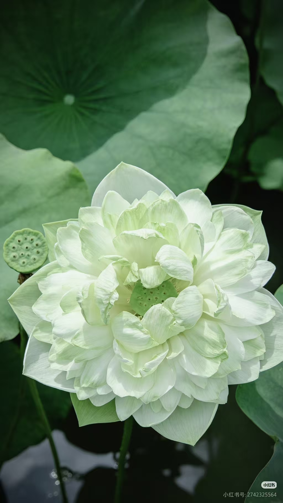

一城荷香，半城梅影。
荷花出淤泥而不染，蜡梅凌寒雪而独开。
一夏一冬，一清一傲，共铸荆州千年风骨。
一座城市的市花，从来不是一次简单的评比。它是气候与水土的选择，是文脉与记忆的选择， 更是万千市民一票一票投出来的共同心愿。2015 年至 2016 年，荆州用一场持续数月的全民评选， 最终让荷花与蜡梅同时登上这座古城的"花之榜首"。
双市花在国内并不罕见——北京于 1987 年确定月季与菊花为市花。 荆州同时选择荷花与蜡梅，并非求全，而是因为二者在季相、气质与空间上恰好互补， 能更完整地表达这座城市的性格。
荷花花期 5—10 月，盛于盛夏；蜡梅花期 12 月至次年 3 月，开于隆冬。 一夏一冬，首尾相接，让城市在一年四季里都有值得期待的花事。
荷花出淤泥而不染，是水的柔与清；蜡梅凌寒独自开，是陆的刚与傲。 一柔一刚，恰如荆州——既有水乡的温婉灵动，也有楚人的刚毅豪迈。
荷花是水体景观的主角，装点湖泊塘堰与城市水系；蜡梅是陆生绿地的常客， 适宜街头、庭院与公园。水陆并举，城市的每个角落都能遇见市花。
一花一世界，一叶一菩提。让我们走近这两朵市花，领略它们的形态之美、习性之奇、分布之广与价值之丰。
多年生水生草本。根茎（藕）肥厚多节，横生底泥。叶盾状圆形，直径可达90厘米。花单生顶端，花瓣红、粉或白色，坚果椭圆形。
强阳性植物，每日需6-8小时直射光。25-35℃为最佳生长温度，低于15℃休眠。喜保水保肥的黏质塘泥，花期5-10月。
原产亚洲热带与温带，我国周朝已有栽培记载。广布于南北各省湖泊、水塘，荆州明月公园、西湖公园、江津湖均有栽植。
全身是宝——藕可食用，莲子入药，莲叶清热，莲花观赏。花型分单瓣、重瓣、千瓣等，花色丰富，是中国传统十大名花之一。
落叶灌木，高达4米。幼枝四方形，老枝近圆柱形。叶对生，表面粗糙。花单生，蜡黄色，内轮花瓣基部有褐紫斑纹，先花后叶，浓香馥郁。
耐寒耐旱，喜阳光亦耐半阴。花期12月至次年3月，于隆冬时节绽放。花被片如蜡质，色泽金黄，故得名"蜡梅"，又称腊梅、黄梅花。
原产中国中部，山东、云南、广东等地均有栽培。湖北、四川、江苏等省将其选为市花，象征不畏艰难、自强不息的城市精神。
花可提取芳香油，入药可解暑生津、顺气止咳。木材坚硬可制工艺品。其不畏严寒的品格，历来为文人墨客所咏叹。
千百年来，荷花与蜡梅承载着华夏民族的精神图腾。从佛教的莲花宝座到文人的咏梅诗篇， 一花一叶间，流淌着中国人对高洁品格的永恒追求。
荷花在中华文化中地位崇高，被儒、释、道三教共同推崇。佛教以莲为清净无染的象征， 佛陀坐于"莲花座"上，极乐世界被称为"莲花世界"。道教奉莲若珍宝， 江淹《莲花赋》赞其"蕊金光而绝色，藕冰拆而玉清"。
水陆草木之花，可爱者甚蕃。
予独爱莲之出淤泥而不染，
濯清涟而不妖，中通外直，
不蔓不枝，香远益清，亭亭净植。
宋代理学家周敦颐一篇《爱莲说》，将荷花的世俗之美提升至精神境界， 定格了莲花"花之君子"的身份。"出淤泥而不染"成为千古流传的高洁箴言。

蜡梅之名起于北宋元祐年间，由苏东坡、黄庭坚正式定名。 腊月时节，人们常剪几枝蜡梅插瓶，清香袅袅，为寒冬带来温暖与喜悦。 蜡梅被多个城市选为市花，象征不畏艰难、自强不息的精神。
墙角数枝梅，凌寒独自开。
遥知不是雪，为有暗香来。
王安石借梅言志，写出蜡梅凌寒独开的孤勇。在古代，蜡梅是冬季文人雅士案头清供， 伴着腊八粥与腊肉，构成一幅温暖的岁朝图景。其花语为"高风亮节、澄澈的心"。
相传王母娘娘身边的玉姬仙女，见人间男耕女织、成双成对，心生向往。 她偷偷下凡来到杭州西子湖畔，忘情嬉戏至天明。王母娘娘得知后大怒， 将玉姬打入湖中淤泥，罚她"永世不得再登南天"。 从此，天宫少了一位仙女，人间多了一种冰清玉洁的鲜花——荷花。
相传古时有位叫腊梅的姑娘，其父身患重病，需梅花入药。 时值隆冬，百花凋零，姑娘四处寻梅不得，哭倒于雪地。 她的孝心感动了花神，枝头忽然绽放出朵朵金黄小花， 香气沁人心脾。姑娘采花煎药，父亲果然痊愈。 后人便将此花以姑娘之名命名，称为"蜡梅"。
花亦有德，花亦有魂。荷花之清、蜡梅之傲，不仅是自然的馈赠， 更是中华民族精神品格的诗意写照。
荷花生于淤泥，却开得洁净无瑕。这是一种身处浊世而坚守本心的高洁， 一种"举世皆浊我独清"的从容。做人当如莲，扎根现实而心向光明。
蜡梅于百花凋零的隆冬绽放，不与群芳争艳，却以一缕暗香报春。 这是一种不畏艰难、自强不息的坚韧，一种"零落成泥碾作尘，只有香如故"的孤勇。
荆州以荷花与蜡梅并为市花，夏荷之柔美与冬梅之刚健交相辉映。 正如这座古城的品格——既有水乡的温婉灵动，又有楚人的刚毅豪迈， 刚柔并济，生生不息。
荆州，古称江陵，楚文化的发祥地。荷花映日，蜡梅傲雪， 这两朵市花，是这座千年古城最温柔也最坚毅的注脚。